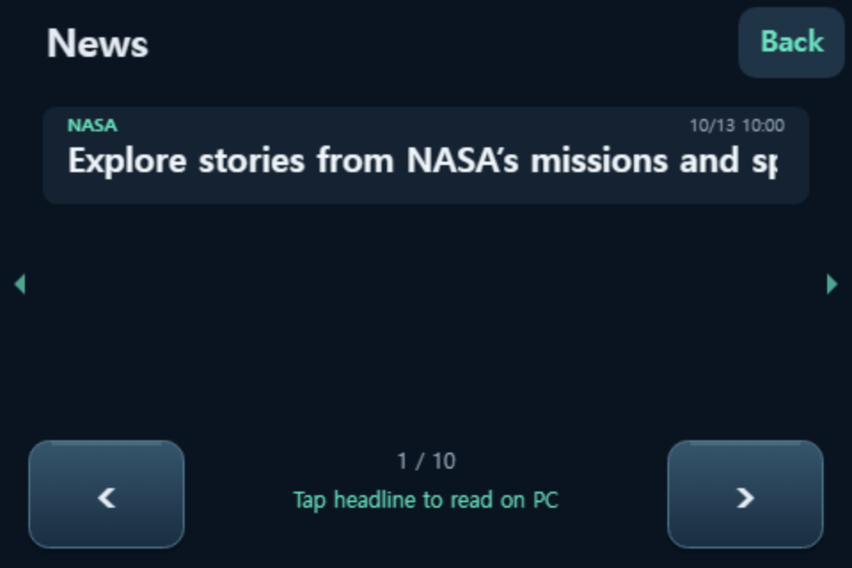
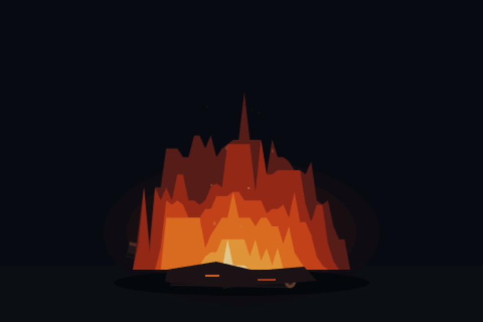
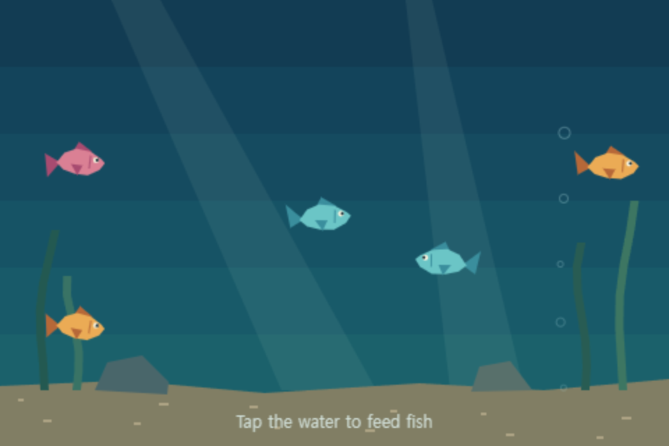

Clocks
Digital, analog and flip clocks for your desk.
DeskDeck / Widgets
Start with the widgets already in Studio, then add something new whenever you like.
Already in Studio
Choose from Studio’s fullscreen widget list. No download needed.
Digital, analog and flip clocks for your desk.
Take a break with the cat playground and jump game.
Control playback and check your PC’s status.
Loop a cached MP4 on Android. Studio 0.9.26+; Android app 0.5.43+ recommended.
Add to your collection
Extra widgets are free ZIP downloads. Use the current Studio 0.9.32 release.

Keep your favorite crypto prices and daily changes in view. Choose coins from Upbit’s KRW markets and build your own price board.
Studio 0.9.6+ · Internet required

Read RSS/Atom headlines and sources, then tap to open the original story on your PC. Start with NASA news in English or add your own public feeds.
Studio 0.9.6+ · Internet required
Studio 0.9.32 is recommended. Updating the ZIP keeps your saved feeds.

Flip black and white disks in a compact board game. Play against the computer or take turns with a friend on the same screen.
Studio 0.8.26+ · No internet needed

Take a quiet break with flickering flames, glowing logs and floating embers.
Studio 0.9.11+ · No internet needed
Silent animation; requires a connection to Studio.

A small aquarium with swimming fish and swaying plants. Tap the water and watch fish follow the food.
Studio 0.9.11+ · No internet needed
Silent animation; requires a connection to Studio.
Install & update
Download a widget package without extracting it.
In Studio, open Fullscreen widgets → Manage widgets. Drop the ZIP onto the list and review its permissions.
Enable the widget and save its order and enabled state. Adjust individual options in Widget settings.
Extra widgets run in Studio on your PC and appear on virtual DeskDeck, Android and supported ESP32 screens. No separate device installation is needed. Campfire and Aquarium ZIPs include their MIT licenses and upstream notices.
New to DeskDeck? Get started →